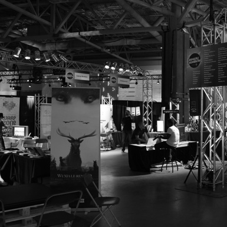
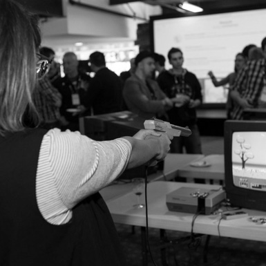

Vous serez redirigés vers le pointdevente.com pour effectuer votre achat.
Votre billet pour la SNQuébec comprend :
Un billet pour le Web à Québec, l'événement phare de la communauté numérique de Québec
L’accès à des événements professionnels de qualité tels que le Pixel Challenge, Meetup Insurtech, RAQ, Industries Créatives, etc.
Plusieurs conférences, démonstrations et ateliers pour le grand public (Soirée F5, WAQ junior, Warp Zone, etc.)
Web à Québec
Événement de formations et de découvertes sur le Web, pour sa 7e édition le WAQ poursuit sur sa lancée de 6 dernières années et offrira une programmation alliant conférenciers locaux et conférenciers internationaux inspirants.
Mardi 4 avril au jeudi 6 avril 2017
Terminal de croisière de Québec
Les professionnels, les entrepreneurs et les étudiants œuvrant dans le développement du Web, des communications
Programmation Web, design Web, marketing interactif, objets connectés, big data, médias sociaux, etc.
Inclus dans le forfait SNQuébec OU 375$ pour l’événement seulement (PRÉVENTE)
Le Pixel Challenge est la plus importante compétition de création numérique au Canada. Il consiste en la création, en équipe, d’un jeu vidéo, d’un mini-métrage d’animation ou d’une conception sonore dans un délai de 48 heures : un tour de force ni plus ni moins ! Au terme de l’exercice, un jury expert provenant de l’industrie détermine les gagnants de chaque catégorie, qui reçoivent alors des bourses offertes par différentes entreprises.
Nouvelle compétition en 2017 – Challenge FX
En plus des compétitions de jeu vidéo, de mini-métrage d’animation et de conception sonore, une compétition d’effets visuels fera dorénavant partie intégrante du Pixel Challenge : le Challenge FX ! En expansion constante depuis trois ans, l’industrie des effets visuels à Québec s’appuie notamment sur les avancées technologiques des studios Rodeo FX, Volta et Squeeze Animation. À l’affût des pépinières d’excellence en création d’effets visuels, l’industrie a approché Pixel Québec pour développer conjointement cette nouvelle compétition.
Jeudi 6 avril au samedi 8 avril 2017
Terminal de croisière de Québec
Les professionnels, les entrepreneurs et les étudiants œuvrant dans l’industrie du jeu vidéo
Compétition, jeux vidéo, animation
Inclus dans le forfait SNQuébec OU 150 $ pour l’événement seulement (PRÉVENTE)
Le secteur Insurtech émerge rapidement de la filière Fintech avec des innovations qui tentent de redéfinir autant la conception des produits que les modèles de distribution et l’expérience client. On estime que les investissements dans ce secteur ont franchi le cap des 2 milliards de dollars en 2015. L’omniprésence des appareils mobiles, les données massives et les objets connectés sont autant des facteurs qui permettent à de nouvelles entreprises d’émerger et offrent la possibilité aux assureurs de se réinventer.
Journée de conférences : Une journée avec 2 conférenciers majeurs et 4 ateliers (2 ou 3 cheminements pour les ateliers)
Espace pour exposants : Un espace pourrait être aménagé pour permettre aux startups et aux assureurs de la région de Québec de s’exposer.
Dîner Startup Insurtech : Durant la journée un concours de pitch sur la thématique « Innovation liéesà l’assurance ».
Lundi 3 avril 2017
Terminal de croisière de Québec
Les professionnels, les entrepreneurs et les étudiants œuvrant dans le domaine de l’assurance et les investisseurs.
Big data, objets connectés, modèles P2P, réinventer l’expérience client.
Inclus (au choix) dans le forfait SNQuébec OU 150 $ pour l’événement seulement (PRÉVENTE disponible à la mi-novembre).
Organisateur princpal
Réalité augmentée Québec
Depuis les dernières années, l’engouement grandissant de certaines entreprises pour les technologies en réalité augmentée et virtuelle (RA/RV) se fait sentir partout au Québec.
C’est dans ce contexte que le CIMMI propose d’organiser, en collaboration avec Québec Numérique, une journée de conférences et de rencontres dédiées aux technologies de la réalité augmentée à Québec. Durant cette journée, des leaders et des experts des entreprises et du milieu de la recherche seront réunis afin de discuter des marchés, des technologies et des applications de la réalité augmentée.
L’objectif de RAQ-2017 est de faire connaître le savoir-faire des entreprises et des centres de recherche de la province auprès des PME et des organismes publics en présentant des exemples d’applications et de technologies innovantes.
Le programme de RAQ-2017 couvrira de façon générale les thèmes suivants :
Les technologies d’acquisition et de visualisation augmentée : HoloLens, caméras 3D, Leap Motion, projections intelligentes, IoT, etc.
Les applications en réalité augmentée : jeux, médicaux, industriels, marketing, arts, etc.
Vendredi 7 avril 2017, 8 h - 17 h
Terminal de croisière de Québec
Les professionnels de l’industrie du AR/VR, les étudiants, les mordus de technos
Inclus dans le forfait de la SNQuébec OU 50 $ pour l’événement seulement. (PRÉVENTE disponible plus tard à l'automne 2016)
Organisateur princpal
FEMMES & NUMÉRIQUE
Allocution d’une Femme CEO du numérique de Québec + activité partage et réseautage. L’allocution s’inscrit dans une soirée de réseautage pour mettre en lumière les acteurs féminins du numérique au Québec et faciliter le maillage.
Mardi 4 avril
À déterminer
La communauté de Femmes Alpha : Professionnels, Entrepreneurs, Intrapreneur et femmes numériques de la Mission 2017 Femmes Alpha.
Allocution d’une Femme CEO du numérique de Québec + activité partage et réseautage
Dans le cadre du projet Culture NumériQc mené par Québec Numérique avec le Ministère de la Culture et des Communications du Québec, le forum des industries créatives aura pour mandat de réunir les travailleurs du domaine culturel, les artistes et les gens des milieux du numérique de partout au Québec, afin de tenir des ateliers favorisant la rencontre entre les mondes et le partage d’expertise.
Lundi 3 avril 2017
Musée de la civilisation
Les professionnels de la culture, les artistes et les entreprises du numérique oeuvrant dans ce secteur.
Le croisement du numérique et de l’art ; perspective mondiale et bonnes pratiques
Inclus (au choix) dans le forfait SNQuébec OU 150 $ pour l’événement seulement (PRÉVENTE disponible à la mi-novembre).
Organisateur princpal
SOCIAL DERBY
Pendant tout le mois d’avril, de petites équipes (3 - 4 personnes) d’experts ou d’amateurs en gestion des médias sociaux auront comme défi d’animer un compte Twitter spécialement créé en lien avec une rue de Québec. L’objectif pour chacune des équipes est de rendre son compte le plus dynamique (nombre d’abonnés, nombre d’interactions, etc.). Pour ce faire, l’équipe doit susciter l’engagement des commerçants, des influenceurs et du public en général.
Cette sympathique compétition a comme bienfait de stimuler l’engagement des gens envers certaines rues de la ville et donc d’aller encourager les commerçants qui y sont situés.
Du 1er au 30 avril 2017
Selon le choix de rues des participants (dont les SDC)
Les animateurs de communautés de médias sociaux, les SDC, les commerçants
Médias sociaux, encourager le commerce local, stimuler le dynamisme des artères de la ville de Québec
Gratuit. À partir de janvier 2017, doit se faire en équipe déjà établie.
Organisateur princpal
Soirée F5
Pour la Semaine numérique 2017, la Chambre blanche souhaite associer le savoir-faire des entreprises du numérique de Québec avec l’esprit créateur d’artistes en arts visuels et numériques de la région de Québec.
En présence d’artistes performeurs(euses) de la région qui oeuvrent avec les technologies et le numérique, le vernissage de la soirée F5 au Musée de la civilisation présentera les meilleures oeuvres issues des Résidences artistes/entreprises. L’exposition débute à l’ouverture de la SNQ17 et se poursuit jusqu’en juin 2017.
Mardi 4 avril 2017, 19 h - 23 h
Musée de la civilisation
Tous les amoureux du numérique
Art numérique
GRATUIT. Inclus dans le forfait de la SNQuébec. Les inscriptions spécifiques pour cet événement seulement seront disponibles plus tard à l'automne 2016
Organisateur princpal
Décoder le monde 2017
Conférences, démonstrations et ateliers pour le grand public
L’événement Décoder le monde du Musée de la civilisation propose aux citoyens quatre jours de conférences, d’ateliers, de démonstrations, de spectacles et de rencontres avec les spécialistes de la recherche scientifique québécoise.
L’édition 2017 de Décoder le monde abordera le thème des robots et de l’intelligence artificielle. Les développements récents dans le domaine de la robotique et de l’intelligence artificielle n’ont de cesse de surprendre et de nous faire envisager un avenir globalement teinté d’une relation personne-machine nouvelle.
30 mars au 2 avril 2017
Musée de la civilisation
Tous les amoureux du numérique
Robots et intelligence artificielle
GRATUIT. Les inscriptions spécifiques pour cet événement seulement seront disponibles plus tard à l'automne 2016
Organisateur princpal
LE WAQ JUNIOR
Événement qui vise à introduire le code et les notions du Web auprès des jeunes âgés de 8 à 14 ans. Des ateliers seront menés par des étudiants québécois et français et des professionnels qui viendront partager leur passion. Le premier objectif est d’introduire les jeunes aux concepts du code et du design. À cela s’ajoute celui d’explorer la créativité et les usages des médias sociaux (Snapchat, Vine, Instagram, Facebook, etc.) et des outils collaboratifs pour travailler en équipe (Trello, Slack, Google drive, Dropbox, etc.). Ces compétences et outils seront cruciaux tant dans la vie scolaire des jeunes, que pour leur avenir professionnel.
Pour rejoindre la clientèle jeunesse nous visons procéder selon deux approches :
Une journée réservée aux groupes scolaires, dont les inscriptions auront été gérées en collaboration avec les établissements d’enseignement ;
Une journée dédiée au grand public.
Le samedi 8 et dimanche 9 avril 2017
À confirmer
Des jeunes de 8 à 14 ans intéressés par le Web
Bon usage des médias sociaux, initiation à la programmation Web
Gratuit. À venir en janvier 2017
Organisateur princpal
ESPACE NUMÉRIQC

Cet espace animé pour une période de deux jours proposera à la fois une exposition rendant accessible une vingtaine de projets et de prototypes à caractères technologiques et numériques, des stations de succès numérique, dont des jeux vidéo développés à Québec et un mini salon de l’emploi pour contribuer à la démarche visant à endiguer la pénurie de main-d’œuvre dans le secteur.
Les objectifs de cette activité sont de démocratiser le monde numérique de Québec, de valoriser l’expertise locale et d’offrir un environnement stimulant pour augmenter les relations B2C pour les entreprises. De plus, nous solliciterons les entreprises en recherche de perles rares à communiquer leur besoin en mains-d’œuvre via un babillard géant d’informations sur le numérique de Québec.
En parallèle de l’exposition, un concours pour les entreprises en démarrage (Startups) de la région et du reste du Québec se tiendra aussi. Ce concours sera sous la gestion de l’organisation du Camp (Québec International) qui est le leader de cet aspect à Québec.
Samedi 1er avril et dimanche le 2 avril 2017
Un centre commercial
Présentation d’entreprises du numérique B2C, de startups et un mini salon emploi
Entrée libre et gratuite
Organisateur princpal
WARP-ZONE

Le temps d'une soirée, joueurs et curieux de tout âge se rejoignent amicalement autour d'une seule et même passion : les jeux vidéo. Que ce soit pour découvrir ou redécouvrir les classiques qui ont marqué l'histoire, faire l'essai de consoles et périphériques inusités, improviser des compétitions amicales de jeux de danse ou tout simplement partager leur expérience et leur passion dans un cadre amical et festif, tout le monde y trouve son compte!
Son objectif est de mettre de l'avant les aspects positifs de l'impact culturel des jeux vidéo. Nous voulons briser les tabous, démystifier les préjugés et faire valoir son importance au sein de notre société.